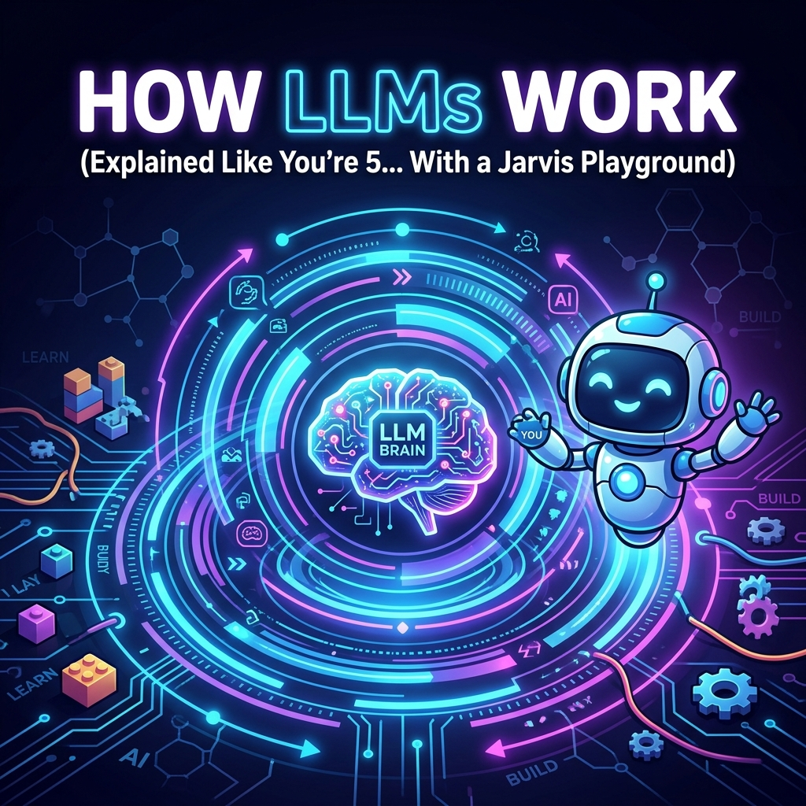

How LLMs Work (Explained Like You're 5... With a Jarvis Playground)


So you've probably heard that Large Language Models (LLMs) like GPT-4, Claude, and Gemini are "just really spicy autocorrects." And while that's not exactly wrong, it's like calling a Formula 1 car "just a really spicy go-kart." Let's break down the magic, without the math, and play with a Jarvis-style brain along the way.
1. The Token: Cutting Your Words into Spaghetti
LLMs don't read words like you and I do. They chew them up into tiny pieces called Tokens. Sometimes a token is a whole word (like "apple"). Sometimes it's a syllable (like "ap"). And sometimes, if it's a weird word like "pneumonoultramicroscopicsilicovolcanoconiosis", it gets chopped up into like 10 pieces.
Why do they do this? Because numbers are easier to do math on than letters. Every token gets assigned an ID. Think of it like a giant menu at a restaurant where the model just orders by number: "I'll take a #42 followed by a #69, please."
2. Embeddings: The "Vibe Check"
Once the LLM has its menu numbers, it plots them in a multi-dimensional space. Think of a graph, but instead of X and Y, it has like 4,000 dimensions. (Don't try to picture 4,000 dimensions; your human brain will melt).
This is where the model learns vibes. It learns that "King" is similar to "Queen", but if you subtract "Man" and add "Woman" you get "Queen". It maps the conceptual distance between "Pizza" and "Happiness" (which, scientifically, is zero).
3. The Jarvis Playground (Live Neural Visualization)
Below is a highly accurate*, definitely-not-just-a-canvas-element visualization of how an LLM processes your text. Type a prompt, hit generate, and watch the "neural network" pass your tokens around until it hallucinates a response.
*Accuracy not guaranteed. It's actually just JavaScript math randomizing some circles. But it looks cool.
4. Attention: The "Ooh, Shiny!" Mechanism
The real secret sauce of modern AI is the Transformer architecture, specifically the "Attention" mechanism. Older AI used to read a sentence and forget the beginning by the time it reached the end. Attention fixes this.
Imagine reading a mystery novel. When the detective says "The killer is the butler!", your brain pays a lot of attention to "killer" and "butler" and ignores the word "the". The AI does the same thing. It maps out which words are deeply connected to other words, allowing it to maintain context over thousands of pages.
So the next time ChatGPT gives you a brilliantly articulate recipe for a sandwich, just remember: it's basically playing a giant game of statistical Mad Libs, powered by billions of tiny glowing nodes (like the ones in the playground above).
If you enjoyed this overly simplified dive into AI architecture, feel free to share it. Just make sure you don't tell the models we called them a spicy autocorrect... we don't want to be on their bad side when they take over. 😉